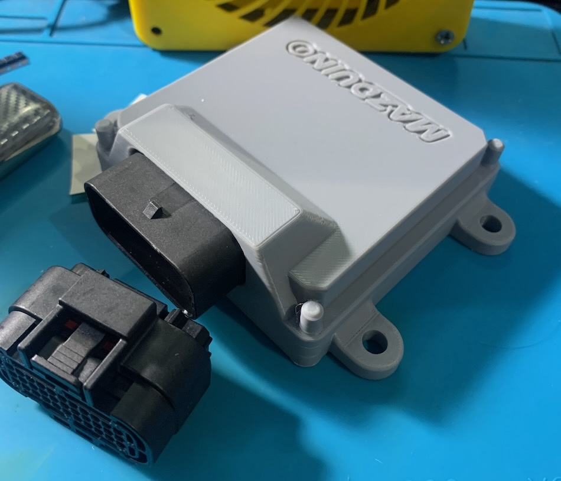

Mazduino LITE v0.1
Pengantar
Mazduino LITE v0.1 adalah varian pertama dari keluarga ECU Mazduino LITE yang dirancang khusus untuk aplikasi engine 4-silinder dengan 4 channel injector dan 2 channel ignition. Versi ini ideal untuk setup Coil On Plug atau aplikasi dengan IGBT Eksternal.

Catatan Penting v0.1:
- IGBT footprint tidak umum - gunakan IGBT eksternal atau Coil On Plug
Fitur Utama
Sistem Input
- Trigger Input: CKP dan CMP untuk Hall/Optical sensors
- VR Support: Variable Reluctance sensors dengan konditioner module
- Analog Inputs: 6x (0-5V) untuk MAP, TPS, IAT, CLT, O2, dan spare
- Digital Inputs: 5x pullup untuk AC Switch, VSS, Clutch, dan launch control
- Sensor Power: 5V regulated dengan internal fuse protection
Sistem Output
- Injection: 4x high-current drivers untuk sequential atau batch mode
- Ignition: 2x outputs dengan Smart Coil (5V/12V) support
- v0.1: IGBT footprint tidak umum - gunakan IGBT eksternal atau COP
- Control: 5x relay outputs untuk fuel pump, fan, AC, main relay, tachometer
- Idle Control: 2x PWM outputs untuk ISC valve
Komunikasi
- USB Type-C: Modern connector untuk tuning dan programming
- CAN Bus: 4-pin connector dengan power selection (5V/12V)
- Serial: RX/TX pins untuk additional communication
Penyimpanan dan Timing
- SD Card: Micro SD untuk onboard data logging (max 32GB)
- RTC: Battery-backed real-time clock
- Processor: ARM Cortex-M4 STM32F4 series
Sistem Konektor
Konektor Utama 33-Pin

Layout Konektor
11 10 9 8 7 6 5 4 3 2 1
22 21 20 19 18 17 16 15 14 13 12
33 32 31 30 29 28 27 26 25 24 23
Pin Assignment v0.1
| Pin | Fungsi | Deskripsi |
|---|---|---|
| 1 | Idle 1 | Output kontrol idle 1 |
| 2 | Idle 2 | Output kontrol idle 2 |
| 3 | CKP/Digital1 | Crankshaft position |
| 4 | VR1- | VR sensor negatif |
| 5 | Ignition 1 | Channel pengapian 1 |
| 6 | Main Relay | Kontrol relay utama |
| 7 | Ignition 2 | Channel pengapian 2 |
| 8 | Tacho/RPM | Output tachometer |
| 9 | Ground Coil | Ground untuk coil |
| 10 | +5V | Output referensi 5V |
| 11 | +12V | Catu daya utama |
| 12 | Injector 3 | Channel injektor 3 |
| 13 | Injector 4 | Channel injektor 4 |
| 14 | CMP/Digital2 | Camshaft position |
| 15 | VR2- | VR sensor negatif 2 |
| 16 | VR2+ | VR sensor positif 2 |
| 17 | AC Relay | Kontrol relay AC |
| 18 | Fuel Pump Relay | Kontrol pompa bahan bakar |
| 19 | Fan Relay | Kontrol relay kipas |
| 20 | IAT | Intake air temperature |
| 21 | TPS | Throttle position sensor |
| 22 | Ground ECU | Ground ECU |
| 23 | Injector 2 | Channel injektor 2 |
| 24 | Injector 1 | Channel injektor 1 |
| 25 | Ground Sensor | Ground sensor |
| 26 | Ground Sensor | Ground sensor |
| 27 | VR1+ | VR sensor positif 1 |
| 28 | MAP | Manifold absolute pressure |
| 29 | Clutch/Digital3 | Input posisi kopling |
| 30 | CLT | Coolant temperature |
| 31 | AC Switch Input | Input switch AC (Aktif Ground) |
| 32 | VSS/Digital4 | Vehicle speed sensor |
| 33 | O2 Sensor | Sensor oksigen |
Penting: Pin 7 dan 9 pada v0.1 adalah Ignition 2 dan Ground Coil
CAN Bus Konektor (4-Pin)
| Pin | Fungsi |
|---|---|
| 1 | Power (12V/5V selectable) |
| 2 | CAN Low |
| 3 | CAN High |
| 4 | Ground |
Pin Mapping MCU
Untuk pengguna lanjutan dan pengembangan firmware:
| Fungsi | Pin MCU |
|---|---|
| Ignition Output 1 | PE15 |
| Ignition Output 2 | PE14 |
| Injection Output 1 | PD8 |
| Injection Output 2 | PB15 |
| Injection Output 3 | PB14 |
| Injection Output 4 | PB13 |
| MAP Sensor | PA0 |
| TPS | PA3 |
| IAT Sensor | PA5 |
| CLT Sensor | PA4 |
| O2 Sensor | PA1 |
| Battery/Voltage Reff | PA2 |
| Analog Spare Input 1 | PB1 |
| AC Input | PB0 |
| Clutch Input | PE13 |
| VSS | PD7 |
| CKP | PC6 |
| CMP | PE11 |
| VR1 | PD3 |
| VR2 | PD4 |
| Tacho | PC9 |
| Fuelpump Relay | PC8 |
| FAN Relay | PA15 |
| AC Compresor Relay | PC7 |
| Main Relay | PE8 |
| Idle 1 | PD9 |
| Idle 2 | PD10 |
| TXD1 | PA9 |
| RXD1 | PA10 |
| TXD3 | PB10 |
| RXD3 | PB11 |
| TXCAN | PD1 |
| RXCAN | PD0 |
| SD CS | PD2 |
| SPI3 CLK | PC10 |
| SPI3 MISO | PC11 |
| SPI3 MOSI | PC12 |
Konfigurasi Hardware
Pengaturan Jumper Kritis
PENTING: Konfigurasi jumper harus benar sebelum power-up!
Top Side Board
- Coil Voltage: 12V/5V selection (default berdasarkan coil type)
- CAN Terminator: Enable/disable resistor terminator
- VR Conditioner: 8-pin connector untuk VR module
Bottom Side Board
- Tacho Signal: 5V/12V output selection (default 12V)
- IGN1/IGN2 Mode: Smart Coil selection (JP3/JP4)
- v0.1: Hanya gunakan Smart Coil - IGBT footprint tidak umum
- VR1/Hall, VR2/Hall: Input type selection
- Digital Pullup: Enable internal pullup resistors
- CAN Power: 12V/5V pada CAN connector
Peringatan Keselamatan
PERINGATAN:
- Jangan hubungkan sinyal 12V langsung ke ECU input
- Verifikasi coil voltage jumper sebelum koneksi
- Gunakan sensor ground terpisah dari power ground
- Check all jumper settings sebelum first power-up